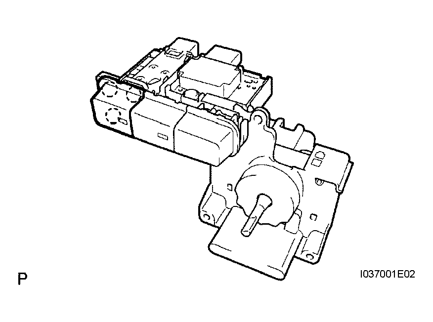
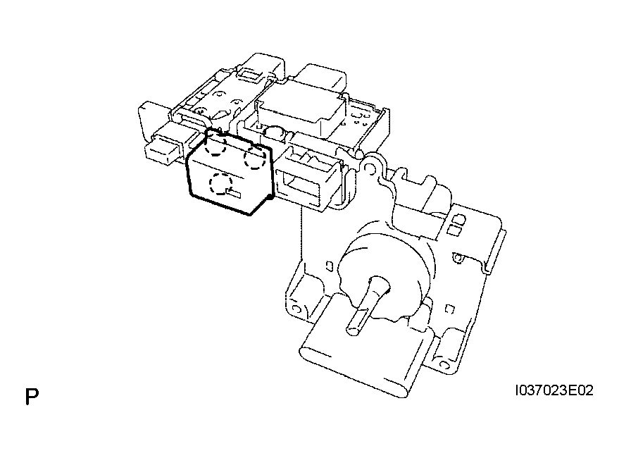
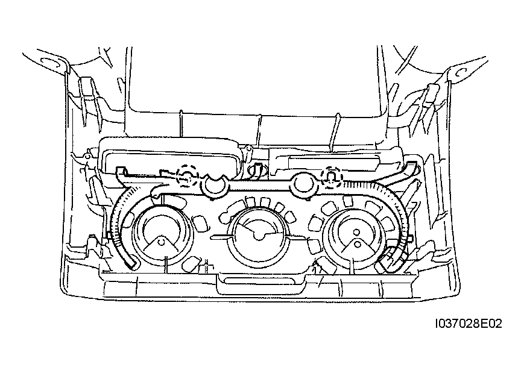

Center Cluster Module Switch: Disassembly
- REMOVE NO. 7 CENTER CLUSTER MODULE KNOB
- Detach the 3 claws and remove the center cluster module knob.

Courtesy of © TOYOTA, LICENSE AGREEMENT TMS1002
- REMOVE NO. 5 CENTER CLUSTER MODULE KNOB
- Detach the 3 claws and remove the center cluster module knob.
 Courtesy of © TOYOTA, LICENSE AGREEMENT TMS1002
Courtesy of © TOYOTA, LICENSE AGREEMENT TMS1002
- REMOVE NO. 6 CENTER CLUSTER MODULE KNOB
- Detach the 3 claws and remove the center cluster module knob.

Courtesy of © TOYOTA, LICENSE AGREEMENT TMS1002
- REMOVE CENTER CLUSTER MODULE INDICATOR LENS ASSEMBLY
- Detach the 2 claws, and then remove the center cluster module indicator lens.

Courtesy of © TOYOTA, LICENSE AGREEMENT TMS1002